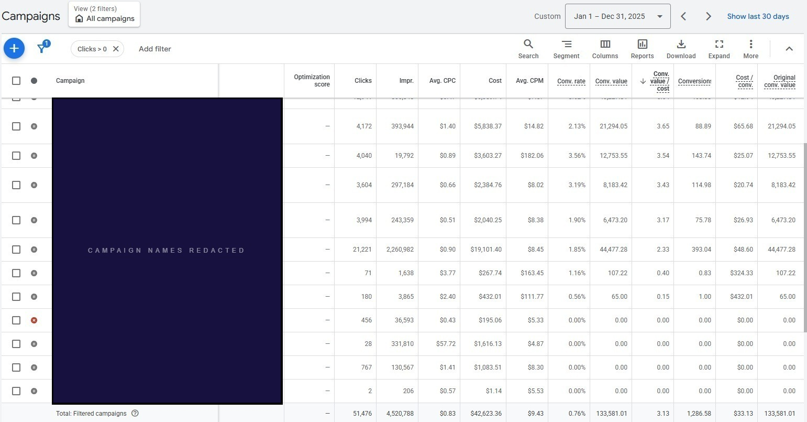
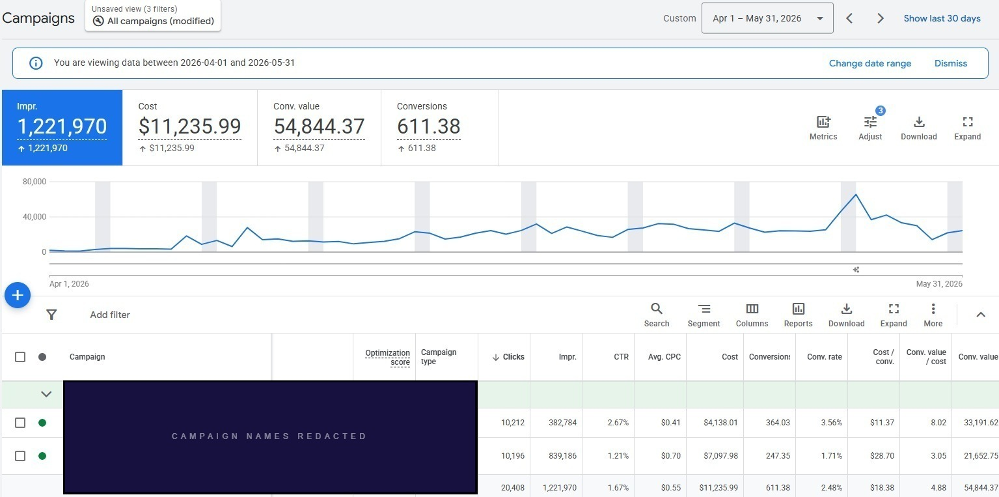

Client identity and campaign names withheld per NDA.

Client identity and campaign names withheld per NDA.
The account had accumulated 14-plus campaigns over several years. Two product groups were generating 83% of purchase conversions and the remaining twelve split a much smaller share. No campaign averaged 20 conversions per week, which was not enough data for Smart Bidding to work reliably.
We consolidated to two focused roles, connected verified customer data as a Performance Max audience signal, and aligned ROAS targets with category margin. Across April–May 2026, the rebuilt account recorded 4.88×.
Conversion volume was fragmented across too many campaigns
No campaign averaged 20 conversions per week. Eleven averaged fewer than eight. That's not enough data for Smart Bidding to work reliably. Complexity had grown; the volume to support it hadn't.
Most conversions came from only two product groups
Two product groups generated 83% of purchase conversions. The rest split a much smaller share across twelve campaigns. Additional separation wasn't creating control. It was fragmenting data across structures too thin to learn from.
Verified customer data was not available as a Performance Max signal
The brand had verified purchaser history. None of it was connected to Performance Max. We uploaded it through Customer Match before launching the rebuilt structure, so the algorithm started with a real reference point for who had already converted.
One ROAS target was being applied across different margin profiles
Every product category used the same ROAS target, despite meaningful margin differences. A target calibrated to a lower-margin product is too restrictive for a higher-margin one. The bidding framework wasn't aligned with the economics of each sale.
If you recognized your account in those findings, a diagnostic session surfaces the same structural gaps and gives you a prioritized plan to address them.
We brought 14 campaigns down to two: a Performance Max for product demand and a Brand Defense for branded terms. Concentration of conversion volume into fewer campaigns was what allowed Smart Bidding to work reliably in each.
| # | Campaign | Type | Verdict |
|---|---|---|---|
| 01 | Brand KW | Search | Keep |
| 02 | Shopping 1 | Shopping | Consolidate |
| 03 | Shopping 2 | Shopping | Consolidate |
| 04 | Shopping 3 | Shopping | Consolidate |
| 05 | Shopping 4 | Shopping | Consolidate |
| 06 | PMax 1 | Perf. Max | Consolidate |
| 07 | PMax 2 | Perf. Max | Archive |
| 08 | PMax 3 | Perf. Max | Archive |
| 09 | Search Gen | Search | Archive |
| 10 | DSA | Dynamic Search | Archive |
| 11–14 | 4 additional campaigns | Archive | |
| Campaign | Purpose | Audience Signal | Scope |
|---|---|---|---|
| Campaign 01 Performance Max | Capture product demand across core and accessories; feed-led discovery | Customer Match: verified purchaser history uploaded pre-launch | All products; brand exclusion applied |
| Campaign 02 Brand Defense | Own brand-name search; controlled bidding; protect branded demand | None required; serves existing brand intent | Brand terms only; non-brand excluded |
Core outdoor gear and accessories accounted for 83% of purchase conversions and an even larger share of revenue. That concentration showed exactly where separate campaigns were, and weren't, justified.
We paused the fragmented legacy structures and rebuilt around one Performance Max campaign and one Brand Defense campaign. Conversion volume that had been spread across 14+ structures was now concentrated into two, each with a clear role and more data to support its bidding.
Before launching the rebuilt PMax, we connected verified purchaser history through Customer Match. Actual customers, not platform-observed behavior. The rebuilt campaign showed signs of stabilizing within about three weeks.
We pulled category-level margin data and adjusted ROAS targets to match it. Higher-margin categories could support more aggressive acquisition at a lower ROAS; lower-margin categories required tighter constraints. One blended target applied equally to every product was leaving money on the table.
| What Was Consolidated | From | To | Rationale |
|---|---|---|---|
| Shopping campaigns | 4 structures | 0 (absorbed into PMax) | Conversion volume was too thin across four separate Shopping structures to sustain Smart Bidding in any of them |
| Performance Max campaigns | 3 structures | 1 unified campaign | Three PMax campaigns divided data that one could use. Consolidating concentrated conversion learning and allowed Customer Match to anchor the single structure |
| Search / DSA / other | 7 structures | 1 Brand Defense campaign | Brand-name search was the only Search intent worth isolating at this account size. All non-brand Search and DSA paused; branded queries moved to a single controlled campaign |
| Total campaign count | 14+ campaigns | 2 campaigns | +55% ROAS improvement (3.13× → 4.88×). Full-year 2025 baseline vs. April–May 2026 post-rebuild window |
Post-rebuild ROAS (4.88×) compared against full-year 2025 blended ROAS (3.13×). Documented period: April and May 2026.
Across April and May 2026, the rebuilt account generated 4.88× blended ROAS, compared with 3.13× across full-year 2025. Two months of documented performance. Not a full-year result. An early outcome worth continuing to evaluate.
One contextual note: April and May are seasonally strong months for outdoor gear. Part of the improvement may reflect that seasonal pattern rather than structural changes alone. The full-year comparison will be the more definitive number. The rebuild is documented; what it holds across a full season is still being established.
You leave with a prioritized plan for your account, yours to keep whether you work with us or not.